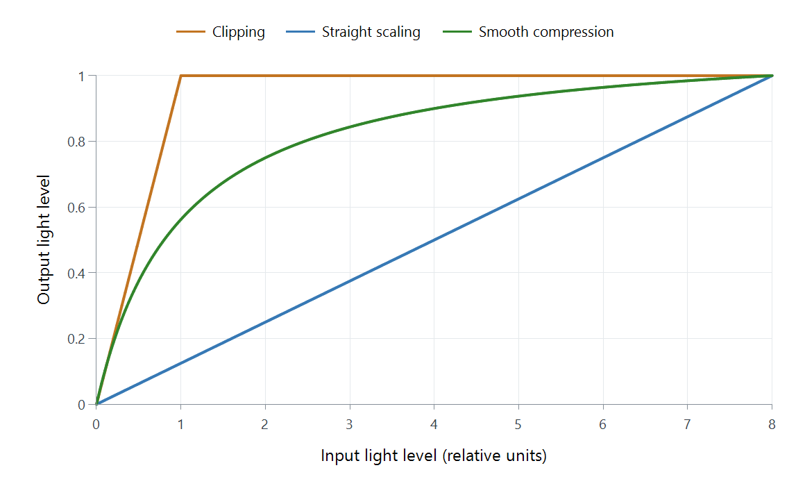

What a Tone-Mapping Curve Controls
A tone-mapping curve determines how input brightness levels are distributed across the available output range.
Choose an input on the horizontal axis, trace upward to a curve, then trace across to the vertical axis. The point answers: what output brightness does this mapping assign to that input?

Calculated examples in relative linear light. Clipping is min(x,1), straight scaling is x/8, and the smooth curve is (9/8) × x/(1+x). These are illustrative relationships, not Emby presets.
Curve slope and brightness separation
On the clipping curve, inputs 2 and 4 both map to 1. Their separation has gone. On the scaling curve, they become 0.25 and 0.5. On the smooth curve, they become 0.75 and 0.9.
| Inputs 2 and 4 | Output difference |
|---|---|
| Clipping | 0 |
| Scaling | 0.25 |
| Smooth example | 0.15 |
The difference is part of the available output contrast. A flatter segment gives less separation to neighboring inputs; a steep segment gives more. Smooth compression can retain distinct highlight values while reducing their spacing substantially.
Now check a lower input, x = 1. Scaling produces 0.125; the smooth curve produces 0.5625. A curve that makes the peak fit can consequently place an ordinary object very differently. The highest endpoint alone does not describe the picture.
Look across the shape
The lower part controls separation near black. The middle affects a large amount of scene content. A shoulder gradually reduces the extra output assigned to very bright inputs. A knee marks a transition in behavior; its numerical meaning depends on the curve's working representation.
The axes are therefore essential. A function that is straight in PQ coordinates can bend when plotted against linear light. Physical-nit axes, normalized-light axes, and signal-coordinate axes show different relationships. State the source peak, target, and parameters before comparing two plots.
Use curve names to find a specific relationship
The individual pages show Hable, Reinhard, Mobius, and other curves. Each page identifies the plotted implementation and its assumptions.
The curve is one part of a conversion. Input interpretation, color handling, adaptation over time, and output encoding affect the final picture too. In an Emby comparison, hold those conditions steady while examining how ordinary objects and bright texture move along the selected relationship. The conversion walkthrough puts the curve into that full path.
See Also
- How HDR-to-SDR Tone Mapping Works
- Tone Mapping Curve: Hable
- Tone Mapping Curve: Reinhard
- Tone Mapping Curve: Mobius